Todos los eventos se desarrollarán en la galería del edificio de la Facultad de Artes de la PUJ
Lunes 28 de Septiembre
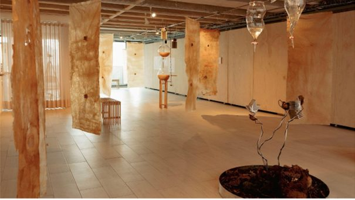
Invitado: Claudia Medina + Leonel Vasquez + Giovanni Randazo
de 4:00 p. m. a 6:00 p. m
Arrullos interespecies. Biología vibrátil
Esta charla integra la agencia sónica desde variadas formas de escucha; intervienen el agua del páramo, las bacterias y la voz humana. Se explora el sonido desde el cielo al suelo, donde el agua y el aire en resonancia con microorganismos, son los principales artistas de la obra. Este trabajo presenta el proceso de creación y diseño de un dispositivo de escucha sensible, donde se hacen perceptibles los ciclos invisibles que sostienen la vida. Un ejercicio de investigación interdisciplinaria que combinó diferentes metodologías de exploración bioacústica, y prácticas artísticas. Se parte de laboratorios de investigación donde se exploraron tanto los efectos del sonido vibrátil, a través de transductores, sobre el crecimiento de microorganismos, así como la condensación del aire, como una otra capa de vibración sonora. La composición acústica de la obra integra la voz humana en forma de arrullo, con grabaciones subacuáticas donde son protagonistas los anfibios e insectos ultrasónicos. Por otro lado, la experimentación llevó a la producción de membranas vibrátiles de celulosa bacteriana. A partir de la fermentación de azúcares y te, se cultivaron altavoces; parlantes que, en asocio con bobinas activadas electromagnéticamente, reproducen la mezcla sónica generada. Arpas de niebla suspendidas condensaron el roció del aire que se activó en superficies metálicas, generando una otra capa sonora de la obra. Así se creó está instalación artística apreciable a partir de procesos metabólicos hechos materialidades resonantes, que conecta gestos y expande la escucha de lo más que humano.
Cocktail Inauguración
3 Congreso de Bioacústica y Ecoacústica
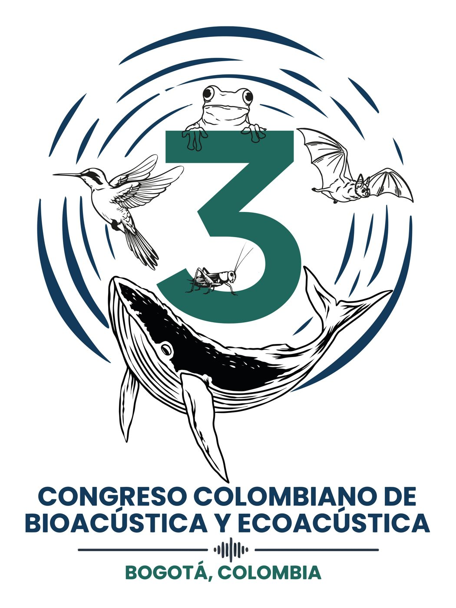
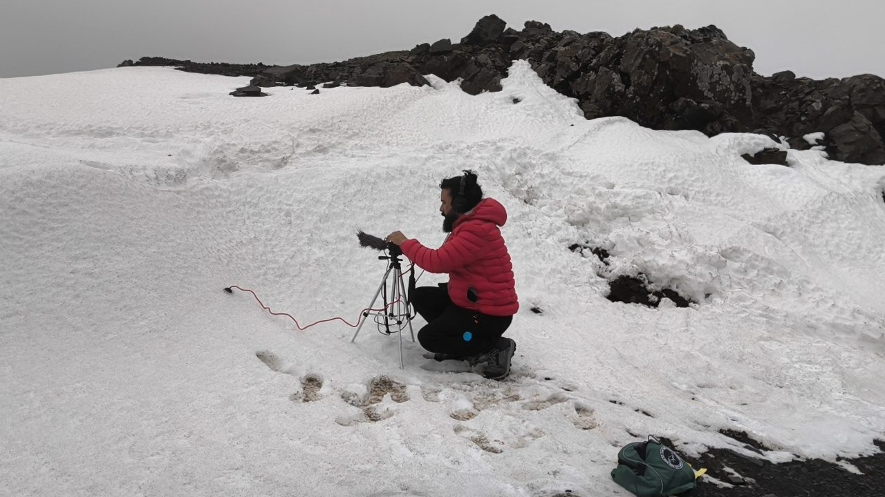
Invitado: Jorge Barco
de 7:00 p.m. a 8:00 p.m
Performance Sonoro. Escuchar la Antártida
Escuchar la Antártida es un performance sonoro que traduce en experiencia de grabación de campo obtenidos durante la residencia artística de Jorge Barco en la Base del Instituto Antártico Chileno (INACH), en el marco del Proyecto Colombiano de Arte en la Antártida y la 12ª Expedición Antártica Colombiana. A través de dispositivos propios —el hidrófono Magma, sensores electromagnéticos y un arpa de viento construida con materiales recuperados de la base— el artista activa en vivo los sonidos del continente blanco: el crujido del hielo, el desprendimiento de glaciares, los cantos de ballenas y los ecos de la vida en las bases científicas. El público es invitado a una escucha inmersiva de uno de los territorios acústicamente menos explorados del planeta.
Martes 29 de Septiembre
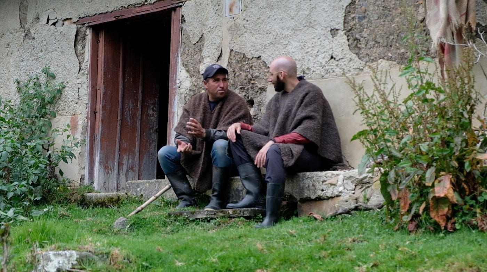
Invitado: Nicolas Leyva Townsend
de 2:00 p.m. a 4:00 p.m
Vírgenes y fósiles, nevados y la Luna
Los conflictos socioambientales tienden a obviar la dimensión ontológica de los nevados de la cordillera oriental de los Andes colombianos, reduciendo las controversias a relaciones entre actores y entidades previamente tipificadas. Las situaciones artísticas pueden propiciar acontecimientos en los que emergen entidades y, con ellas, mundos posibles. Este método generativo permite cuestionar las narrativas socioambientales hegemónicas, dejar entrever otras formas de existencia y ampliar la imaginación política. En esta ponencia me concentraré en el método y, más concretamente, su función conceptual y generativa, desde el caso del campesino Eri Silva Jaimes, quien le pide al nevado conversar con la Luna en clave de silbidos.
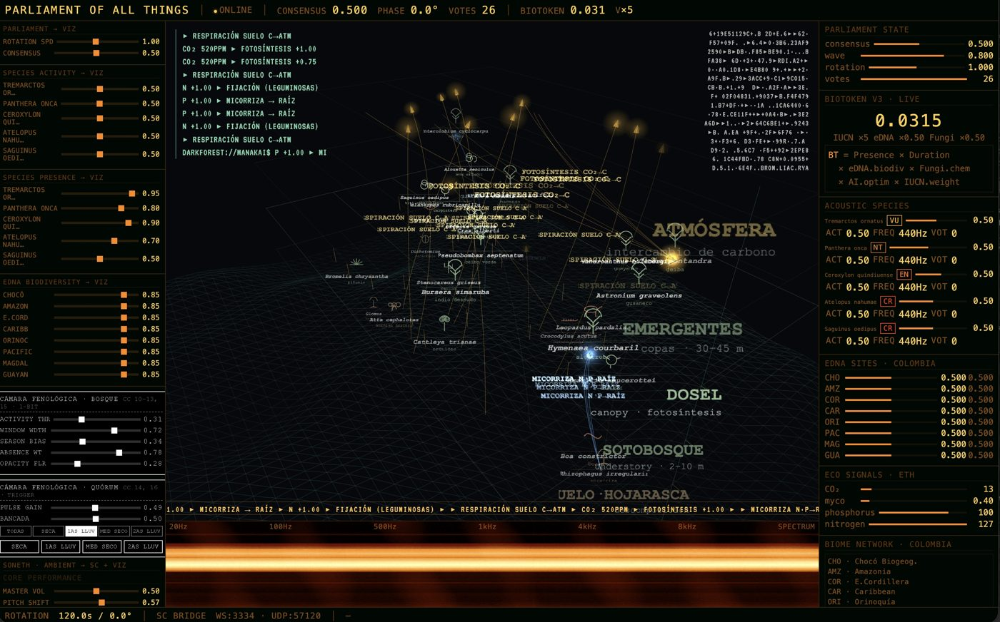
Invitado: Alejandro Duque
de 4:00 p.m. a 6:00 p.m
Parlamento de lo Vivo. De la cibernética a un parlamento multiespecie: escucha, vectorización y biocracia en un bosque seco tropical
Un bosque seco tropical, una comunidad campesina y la infraestructura financiera planetaria de una blockchain pública ocupan, por un momento, el mismo plano de escucha. Esta ponencia presenta BiocracyEngine del Parlamento de lo Vivo, primera iteración de investigación-creación de la tesis doctoral titulada [de] Bioacustica [a] Biocracia. Un instrumento audiovisual en vivo que presenta sonidos y datos de una cadena de bloques: otras especies pasan a formar parte de esa economía en lugar de ser su materia prima. Partiendo de la cibernética de segundo orden, la autopoiesis y la hipótesis distribucional del lenguaje, la charla recorre cómo la vectorización —la misma operación técnica que podría vigilar un territorio— puede en cambio constituir su parlamento, sostenido abierto por el derecho a la opacidad de Édouard Glissant y la comunidad que viene de Giorgio Agamben. Se expondrán la arquitectura de gobernanza (dIAP) y la posibilidad de un BioToken como unidad no transable de presencia, y la presentación de una obra sonora multicanal como caso de un objeto liminar de investigación-creación.
La presente charla se realizará en un formato hibrido. Transmisión vía Zoom, abierta al público y proyección en la sala de exposiciones.
el link lo publicaremos en el IG de Re:Mediaciones
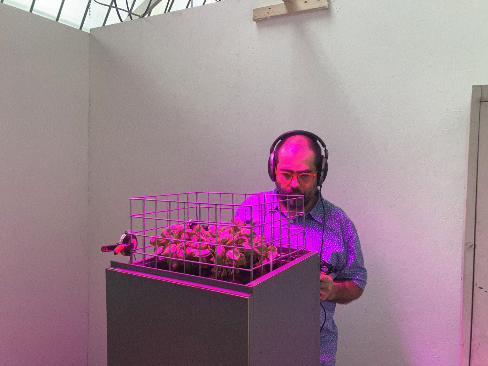
Invitado: Dr David Vélez
de 6:00 p.m. a 8:00 p.m
Práctica Sonora Reflexiva y Relacional
Esta presentación recorre dos líneas recientes de mi práctica sonora en torno a organismos y entornos más-que-humanos. En la primera parte presentaré una serie de experimentos con plantas de tomate y remolacha en los que el sonido —ondas sinusoidales, vibración y transducción— es proyectado hacia plantas domesticadas para la horticultura como parte de procesos de cultivo, observación y cuidado. Estos trabajos me han llevado a preguntarme no solo qué puede hacer el sonido sobre una planta, sino cómo una práctica artística puede aprender a modificar sus propias decisiones frente a la vida vegetal.
La segunda parte invierte esta relación: en lugar de proyectar sonido hacia un organismo, la práctica se orienta a escuchar un entorno. A partir de grabaciones realizadas con hidrófonos y geófonos en el río Calder y su cuenca, en el norte de Inglaterra, presentaré una investigación sobre aguas, suelos, vibraciones, biodiversidad y contaminación que ha dado lugar a diversas obras e instalaciones, entre ellas Ghostly Waters y Ghostly Rivers. En conjunto, ambos módulos exploran el sonido como una forma de aproximación a procesos vivos que en gran medida permanecen fuera de nuestra percepción cotidiana.
Módulo 1 — Estimulación Sonora: sonido, vibración y cultivos.
Experimentos con tomates y remolachas, ondas sinusoidales, transducción, horticultura, producción de alimento y cuidado vegetal.
Módulo 2 — Escucha Reflexiva y Crítica: aguas y subsuelos del río Calder.
Grabaciones subacuáticas y subterráneas realizadas con hidrófonos y geófonos, y su desarrollo en obras como The Calder in Your Bones, The Calder in Your Guts, The River Within, Ghostly Waters y Ghostly Rivers.
Miércoles 30 de Septiembre
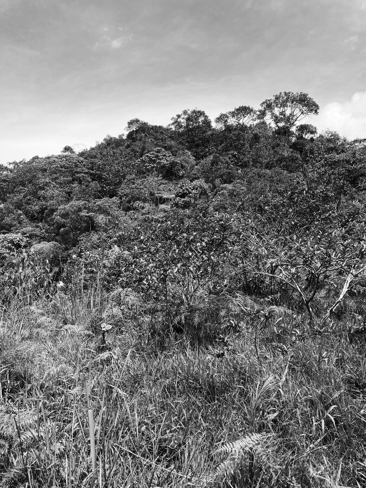
Invitado: Alejandro Castillejo-Cuéllar + Jorge Barco
de 2:00 p.m. a 4:00 p.m
Los (In)audibles del Monte.
En esta conversación quisiera hacer una reflexión sobre la idea de las verdades del monte y la naturaleza como un sujeto de dolor, cuestiones que llevaron al desarrollo metodológico de mi trabajo en la Comisión de la Verdad de Colombia. Es parte de los argumentos que aún trabajo en un pequeño libro, casi un opúsculo, De los Campos a los Inaudibles del Monte: Una Historia Personal de la Escucha en el que exploro la violencia como una forma de inscripción sobre el cuerpo, el lenguaje, el espacio y el tiempo. Me inquieta profundamente, en este contexto, explorar la idea del testimonio de la "naturaleza" o del "territorio" y las condiciones de su (in)audibilidad como parte de una transición personal que nos lleve de un conocimiento centrado en la escritura a otro centrado en la vibración, de las grafías a las fonías. Esta actividad acompaña la pieza sonora (o espacio aural de aprendizaje) Murmullos I, o la Herida de la Naturaleza (2022).
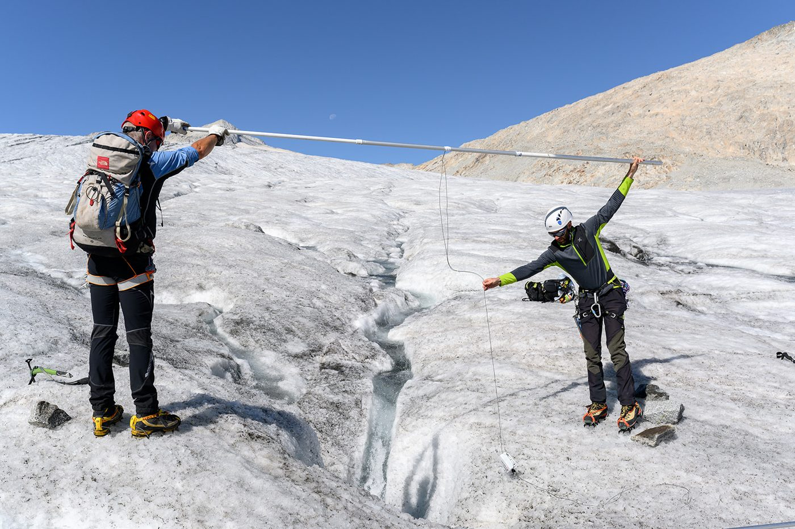
Invitado: Sergio Maggioni (neunau) - ITA
de 4:00 p.m. a 6:00 p.m
Un Sonido en Extinción (“Un Suono in Estinzione”).
Un ruido que conduce al silencio.
La charla recorre la trayectoria de seis años de Un Suono in Estinzione (USIE), un proyecto de investigación artística y científica en curso fundado en 2020 por el artista transdisciplinario Sergio Maggioni (neunau), en colaboración con un comité científico de glaciólogos y una red más amplia de investigadores y colaboradores. La presentación traslada a la audiencia a los paisajes donde se desarrolla la investigación —el glaciar Adamello y la Marmolada— y a través de quince expediciones realizadas en condiciones desafiantes y, a menudo, extremas. Se colocaron cuatro dispositivos de grabación en distintas ubicaciones y altitudes —incluyendo el interior de grietas y cavidades glaciares—, dejándolos captar y registrar sonido de forma continua, las 24 horas del día, a lo largo de cuatro veranos consecutivos, lo que permitió recopilar más de 20.000 horas de grabación. A partir de este archivo, la charla presenta Transfonia, la metodología del proyecto para transformar el material recopilado en una obra artística: un proceso que abarca la escucha intensiva, la segmentación, la anotación, el reconocimiento de patrones y la selección, elementos que se recombinan para crear un collage sonoro multitemporal y de múltiples puntos de origen. La charla concluye abordando el futuro del proyecto y su ambición de extender esta metodología a glaciares de otras regiones y hemisferios.
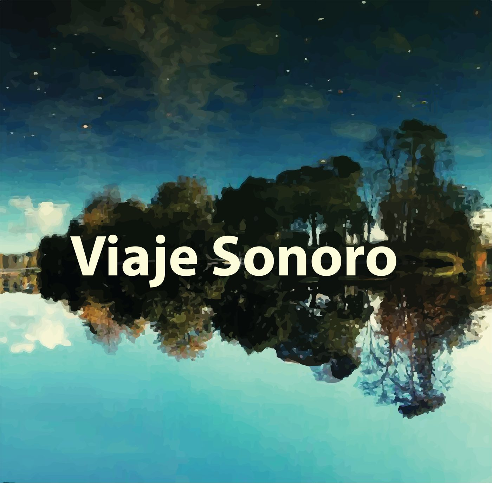
Invitado: Colectivo Viaje Sonoro (Sol Camacho-Schlenker, Camila Parra-Guevara, Yomayra Puentes-Rivera)
de 6:00 p.m. a 8:00 p.m
La escucha como tejedora de paisajes.
El sonido es una propiedad emergente del paisaje, un hilo formado por los elementos individuales de un lugar y sus interacciones. Nuestra escucha es una tejedora que combina sonido con mecanismos biológicos o evolutivos innatos y sensibilidades o comportamientos aprendidos. Con el tejido resultante, damos sentido al mundo y a nuestro lugar en él. A partir de un fragmento de paisaje sonoro escuchado colectivamente, exploraremos los mecanismos neurológicos, ecológicos y sociales que influencian nuestra escucha y el sentido que le damos a los distintos sonidos. Discutiremos sobre nuestra percepción, filtrado e interpretación de la información sonora, haciendo énfasis en las diferencias individuales: capacidades sensoriales, sesgos cognitivos, oficios, herramientas, experiencias vitales y memorias.
La presente charla se realizará en un formato hibrido. Transmisión vía Zoom, abierta al público y proyección en la sala de exposiciones.
el link lo publicaremos en el IG de Re:Mediaciones
Jueves 1 de Octubre
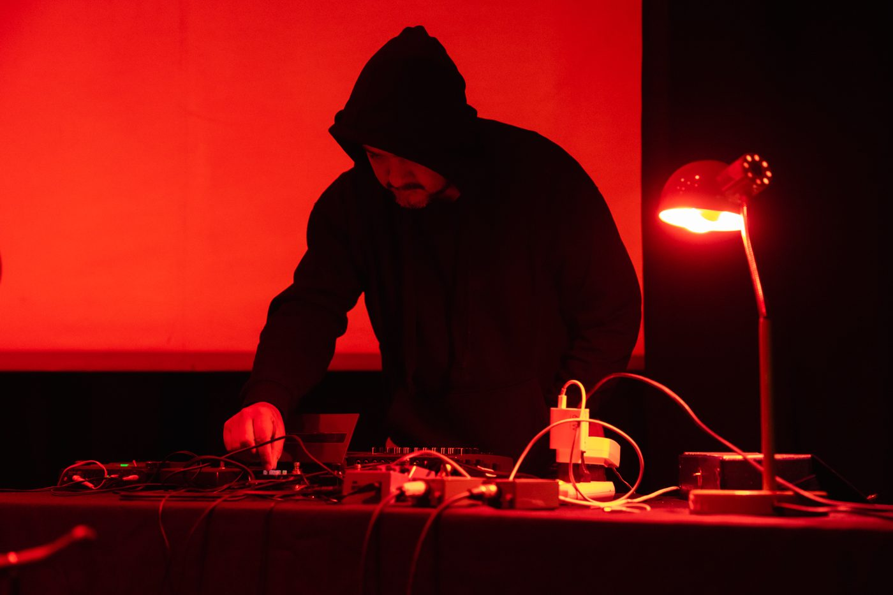
Invitado: Camilo Cantor
de 10:00 a.m. a 12:00 p.m
Remixando los archivos del Instituto Humboldt.
Como una forma de explorar, transformar, expandir y subvertir los procesos mismos de investigación ornitológica, ecológica y bioacústica, el Exploratorio junto al Instituto Humboldt y la Plataforma de Escuchas Auditum, se propusieron un ejercicio: llamar artistas para que, empleando grabaciones de campo de aves, insectos y reptiles del archivo del instituto, desarrollaran nuevas interpretaciones, derivas, composiciones y reflexiones que se condensaron en dos proyectos sonoros que reflexionan sobre los archivos, la naturaleza y los límites entre lo científico y el arte, estas composiciones fueron presentadas en una serie de conciertos desarrollados en Medellín y qué propusieron, desde la sonoridad y la escucha, una serie de posturas, procesos y creaciones que develan esta cualidad doble de la interpretación auditiva, junto con el cruce de métodos, procesos y simbolismos que se ven envueltos en el arte de crear desde, ante y junto a las diferentes especies.
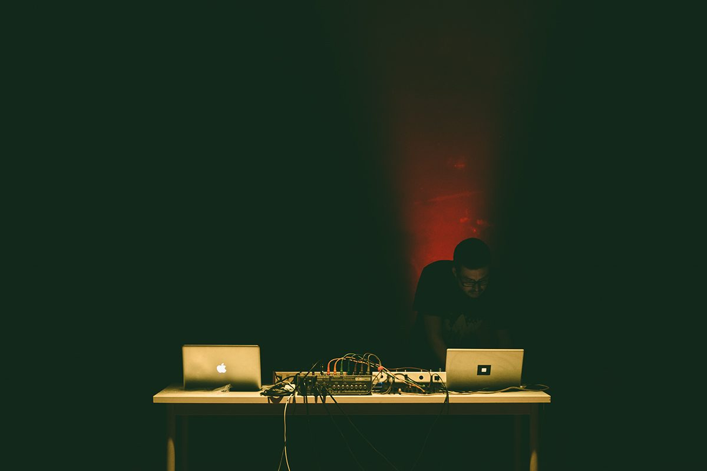
Invitado: José Santamaría
de 2:00 p.m. a 4:00 p.m
BARDO
De la misma forma que el prisma logra descomponer la luz blanca en colores, ¿es posible descomponer el ruido blanco en sonidos armónicos, notas temperadas y así crear una obra que use única y exclusivamente los sonidos del río?
Bardo es una obra musical multicanal, compuesta en su totalidad con sonidos procedentes de ríos del departamento de Antioquia que el artista ha recorrido y estudiado a lo largo de doce años.
Desde tiempos inmemoriales, el río ha sido eje común del progreso de las civilizaciones: es impensable el desarrollo de una sociedad sin los ríos como fuente de vida, canal de comunicación y comercio. Bardo es una obra de música electrónica enmarcada dentro del ambient, basada en síntesis y grabación de campo. que muestra al río como un juglar que con su incesante y tranquilizador canto se presenta como transmisor de vida: un bardo que proporciona sosiego, placidez, bienestar.
Bardo busca indagar, reconocer y difundir el acto de escuchar desde una perspectiva reflexiva, atenta y consciente. Un enfoque que nos lleve a lo sutil, etéreo y delicado que es el entorno, y que nos muestre la influencia que ejerce todo lo que escuchamos en nuestro diario vivir. Es por eso que, a partir de una paleta sonora limitada que compele el trabajo de síntesis a su máxima expresión y con una técnica depurada, busca extraer del sonido de ríos, texturas y timbres para el proceso creativo.
Así desarrolla una obra que ahonda desde una perspectiva un tanto menos ruidista, en ese viejo concepto de la música electrónica que habla de encontrar musicalidad en sonidos aparentemente no musicales. Se trata de cinco piezas instrumentales en un sistema multicanal que permitirá a los asistentes acceder a una profunda experiencia sonora que invita a reflexionar además en la ecología y en los ríos como fuentes de vida.
Los registros sonoros de ríos utilizados en Bardo son: Río Buey, Río Piedras, Río Poblanco, Quebrada Santa Elena, Quebrada San Juan - El aguacate, Río Concepción, Quebrada Matasano, Río Nus, Río Negro, Río Tenche, Río Guadalupe, Río Medellín, Río Grande, Río Chico, Quebrada Morales, Río Porce, Río Bizcocho, Río Guatapé, Río Arma, Río Samaná Norte, Río Claro, Río San Juan, Río Cauca, Río Urrao y Río Penderisco.
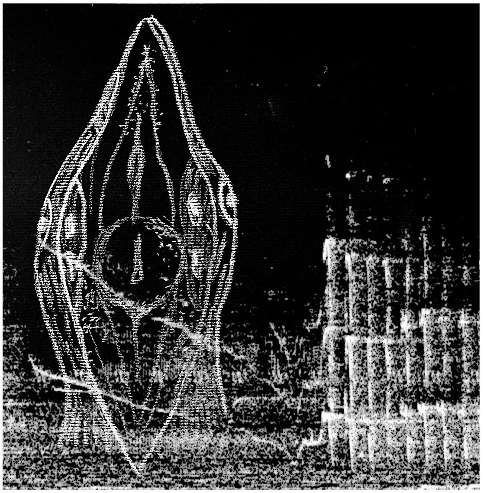
Invitado: Angélica Piedrahita
de 4:00 p.m. a 6:00 p.m
Escuchas y Escrituras.
Desde una práctica de exploración performática y registro fonográfico, la charla explorará la voz como umbral aural: un modo de habitar, junto a lo no-humano y lo más-que-humano, una relacionalidad primaria y encarnada. En el intento por acoplar la voz a las biofonías del paisaje, el aliento y la garganta se revelan como zonas de contacto vibratorio, territorios donde el lenguaje se desborda antes de volverse significado. De ese acoplamiento nacen también preguntas sobre las materialidades sonoras: qué voz darle a la tierra en duelo, cómo imaginar las sonoridades posibles de un territorio que ha perdido —especies, cantos, equilibrios—, y hacer de esa imaginación vocal un modo de pensar las ausencias y cambios del entorno. Ensayando la vocalidad extendida y la improvisación, la presentación abre un espacio de resonancia afectiva en el que emitir sonido es, a la vez, un gesto de atención, de duelo compartido y de cuidado hacia un mundo que expande el concepto de vida.
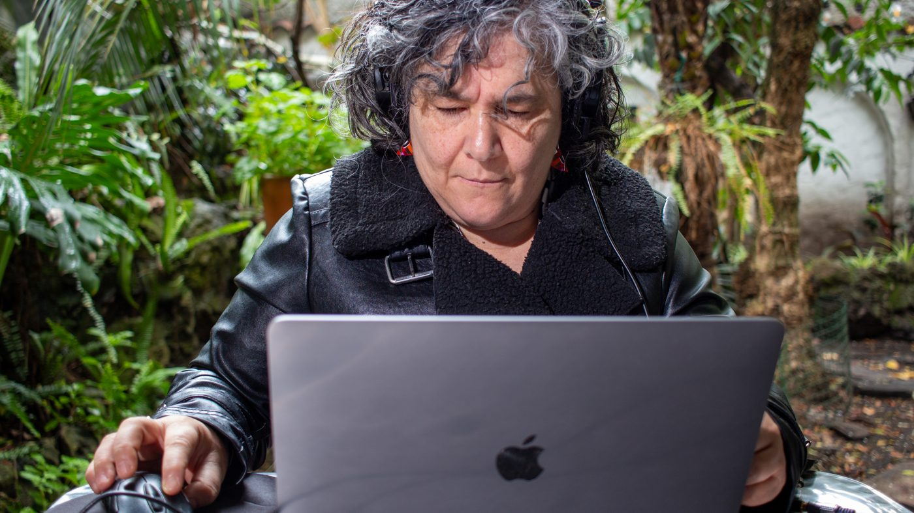
Invitado: Ana María Romano
de 6:00 p.m. a 8:00 p.m
Charla-Performance.
De que las hay las hay: Escuchar y amar a/con las plantas.
Desde una práctica de exploración performática y registro fonográfico, la charla explorará la voz como umbral aural: un modo de habitar, junto a lo no-humano y lo más-que-humano, una relacionalidad primaria y encarnada. En el intento por acoplar la voz a las biofonías del paisaje, el aliento y la garganta se revelan como zonas de contacto vibratorio, territorios donde el lenguaje se desborda antes de volverse significado. De ese acoplamiento nacen también preguntas sobre las materialidades sonoras: qué voz darle a la tierra en duelo, cómo imaginar las sonoridades posibles de un territorio que ha perdido —especies, cantos, equilibrios—, y hacer de esa imaginación vocal un modo de pensar las ausencias y cambios del entorno. Ensayando la vocalidad extendida y la improvisación, la presentación abre un espacio de resonancia afectiva en el que emitir sonido es, a la vez, un gesto de atención, de duelo compartido y de cuidado hacia un mundo que expande el concepto de vida.